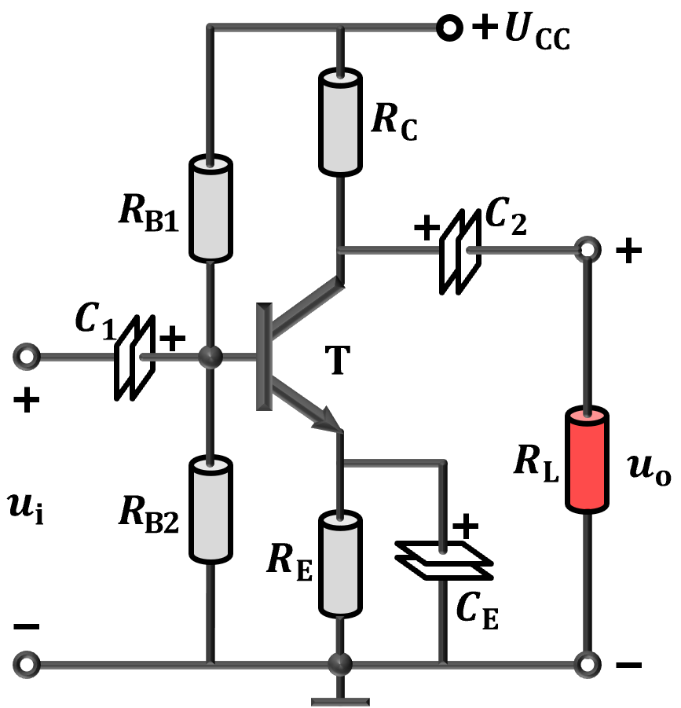
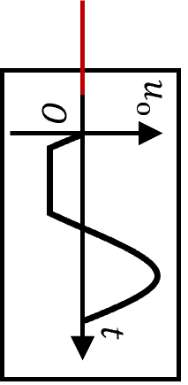
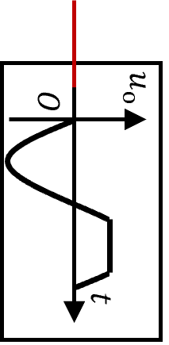
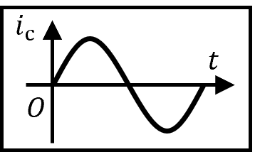
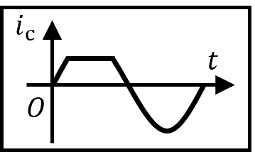
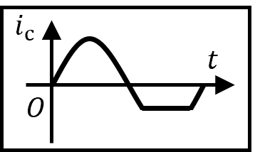
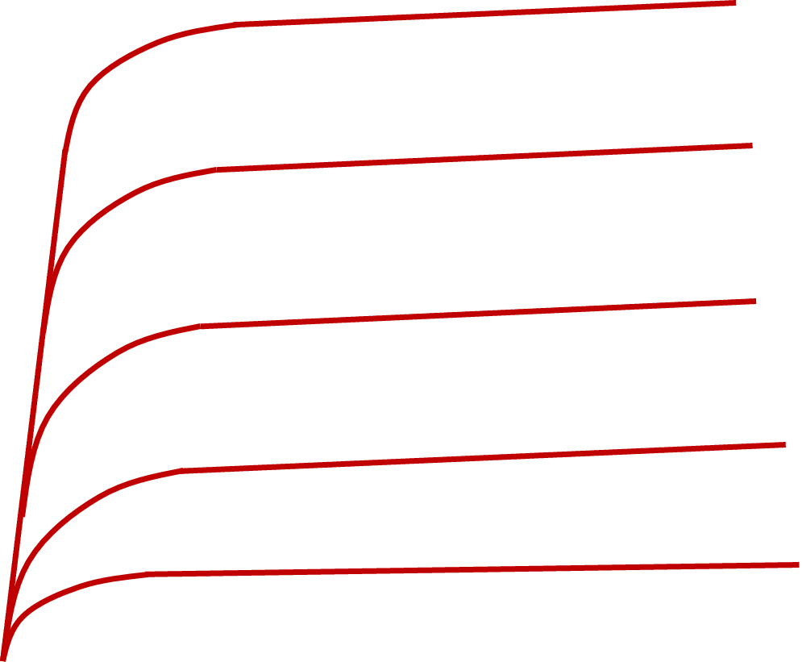

分压式电流负反馈放大电路中，电路静态工作点$\mathrm{Q}$由晶体管参数和放大器偏置电路共同决定， 静态工作点的选取会影响放大电路的增益、失真等各方面。

$R_\mathrm{C}$ 较小
$\mathrm{Q}$
$R_\mathrm{C}$ 较大
$\mathrm{Q}$
$\dfrac{U_\mathrm{CC}}{R_\mathrm{C}}$
$U_\mathrm{CC}$
分压式电流负反馈放大电路中，电路静态工作点$\mathrm{Q}$由晶体管参数和放大器偏置电路共同决定， 静态工作点的选取会影响放大电路的增益、失真等各方面。

（1）改变$R_{\mathrm{B}1}$大小对静态工作点的影响。





（2）改变$R_{\mathrm{B}2}$大小对静态工作点的影响。
（3）改变$R_{\mathrm{C}}$大小对静态工作点的影响。
（4）改变$R_{\mathrm{E}}$大小对静态工作点的影响。
（5）BJT的$\beta$变化对静态工作点的影响。

（6）改变$U_{\mathrm{CC}}$大小对静态工作点的影响。